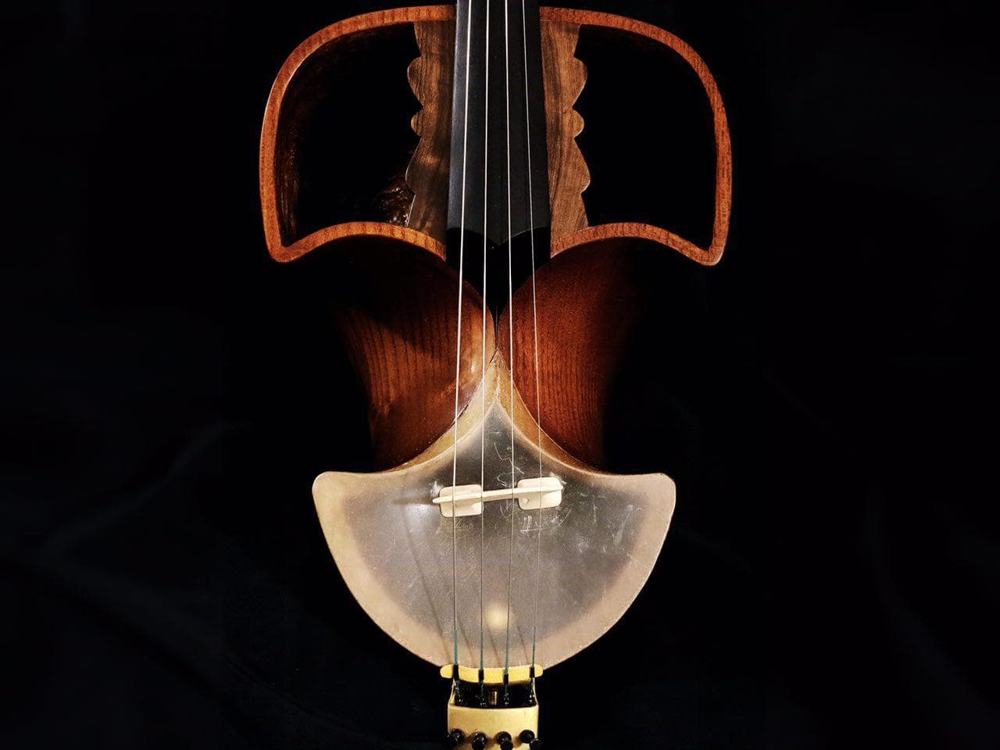

قیچک
قِـیچَک یا غیژک یکی از سازهای زهی در موسیقی ایرانی است که مانند کمانچه با آرشه نواخته میشود. جنس کاسهٔ طنینی قیچک از چوب گردو یا توت بوده و سیمهای آن فلزی هستند. این ساز دارای قدمت بسیار زیادی است و در موسیقی نواحی ایران کاربرد فراوانی داشته و دارد. این ساز از نظر نوازندگی شبیه به ویولنسل است و حتی در نوع بزرگتر آن که به قیچک بم معروف است، از آرشهٔ ویولنسل استفاده میشود.
ساز قیچک اساساً محلی است و بیشترین رواج را در نواحی جنوب شرقی ایران و خصوصاً استان سیستان و بلوچستان ، استان کرمان و هرمزگان دارد. در سالهای اخیر این ساز در شهرهای دیگر نیز استفاده میشود. در آن نواحی طبق عقیده و سنت اهالی، برای معالجه امراض بهکار میرود.
در شمال افغانستان نیز قیچک در موسیقی سنتی رواج وسیعی دارد. در ولایات مثل بغلان، کندز و بلخ از قیچک در محافل عروسی و دیگر مراسم خوشی استفاده میشود.
تاریخچه قیچک
ساز قیچک در نواحی جنوب شرقی بسیار رایج بوده و اساسا از سازهای محلی به شمار می رود و استان های سیستان و بلوچستان و هرمزگان از جمله مناطقی می باشد که به صورت قابل توجهی در موسیقی های خود از این ساز استفاده می کنند؛ و در حال حاضر در شهرها و استان های دیگری نیز این ساز رایج شده است. قیچک با داشتن پیشینه ای بیش از 50 ساله برای اولین بار توسط ابراهیم قنبری مهر در کارگاه های ساخت انواع سازهای سنتی کشورمان ساخته شد.
این ساز از خانواده سازهای زهی آرشه ای می باشد و اغلب از 12 سیم طراحی و عرضه می گردد که شش سیم آن نقش واخوان را در نواختن قیچک دارد و شش سیم دیگر نقش ملودی نوازی را به عهده دارند. این ساز در فرهنگ بلوچی ها از مهمترین و محبوب ترین سازهای گروه نوازی بوده و به همراه دهلک و تنبورک نواخته می شود. در حال حاضر نمونه های بم این ساز در موسیقی ایران و ارکستری کشورمان بسیار مورد توجه و بهره برداری قرار گرفته و با توجه به محدوده صدا دهی این ساز با سایر سازهای مشابه خود چون ویولن آلتو برابر می باشد.

ساختار قیچک
شکم ساز از دو قسمت مجزا از یکدیگر تشکیل یافته. قسمت تحتانی کوچکتر و به شکل نیم کره است که بر سطح مقطع جلو پوست کشیده شده و خرک ساز روی پوست قرار دارد. قسمت بالایی بزرگتر، مثل چتری روی قسمت پایینی قرارگرفته و هر دو قسمت توسط سطح منحنی از عقب به هم اتصال یافتهاند و در نتیجه در جلو یا بین دو قسمت، حفرهای تشکیلشده است. سطح جلویی قسمت بالا، جز در ناحیهٔ وسط که زیر گردن ساز قرارگرفته بهصورت دو شکاف پهن باز است. دسته ساز تقریباً در نصف طول خودروی شکم قرارگرفته و نیمهٔ دیگر در بالا به جعبهٔ گوشیها متصل است. دسته فاقد پرده (دستان) است.